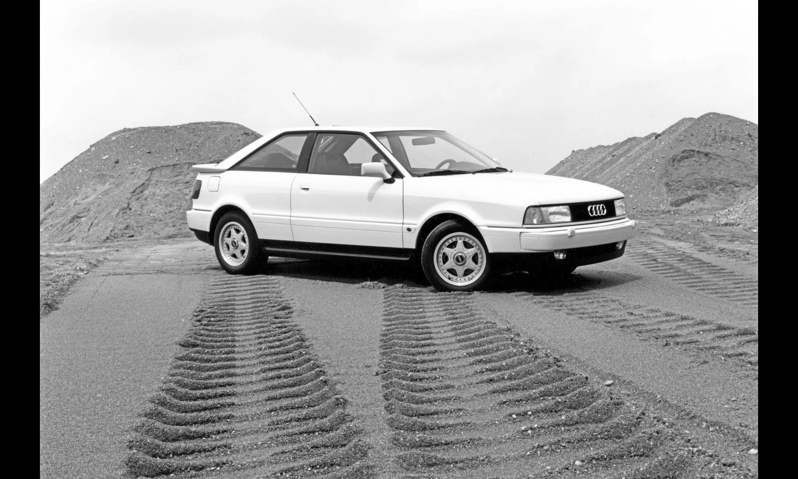
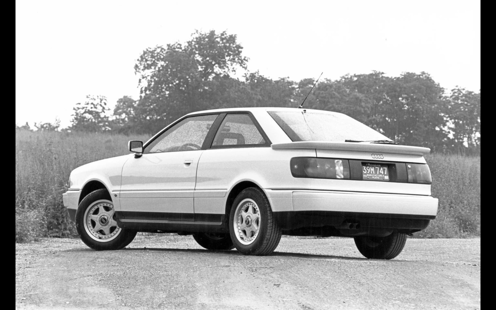
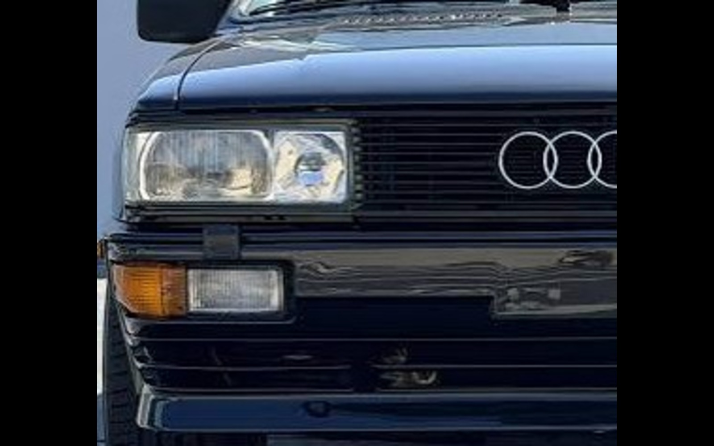
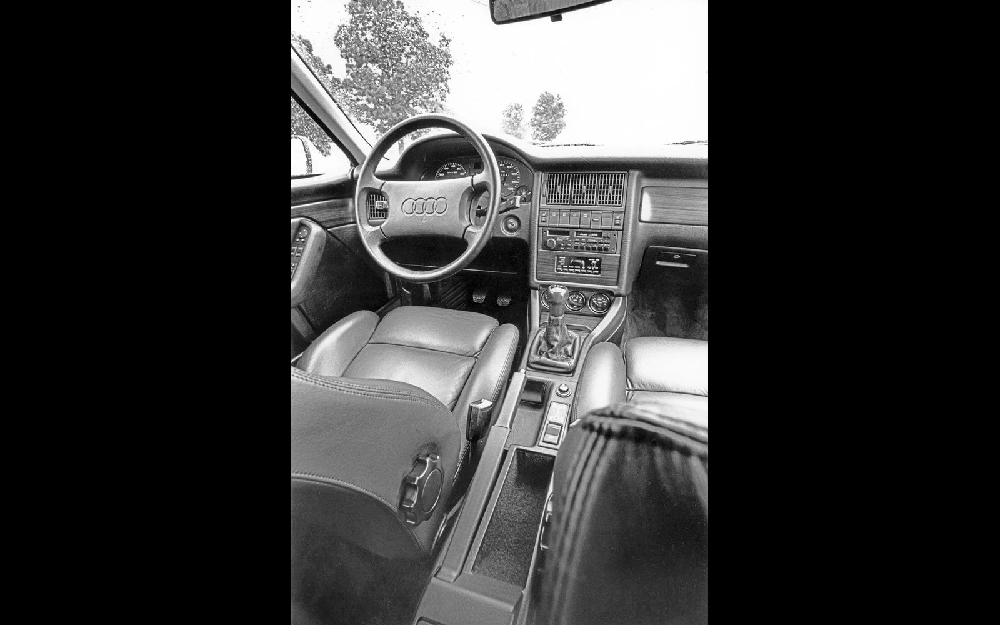
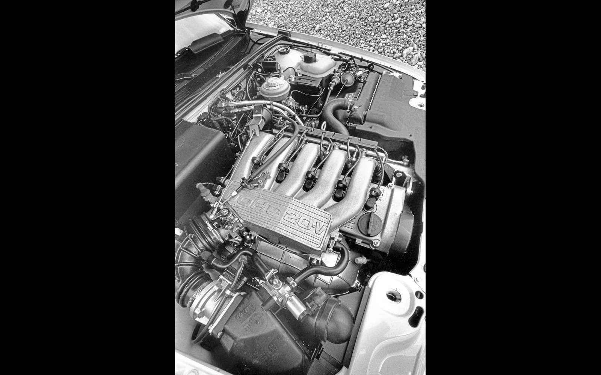
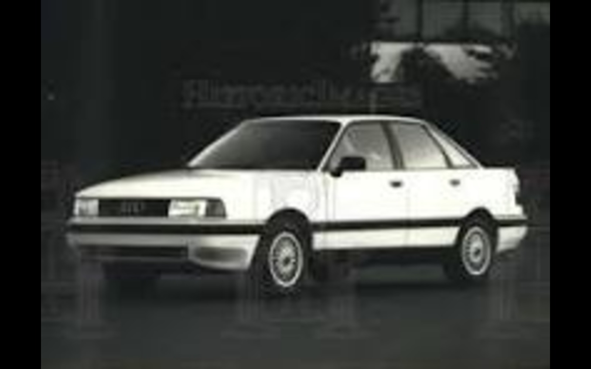

Audi quattro / 1990–91
The numbers behind the legend.
By 1990 the original quattro had matured into its definitive form: the 20-valve, 220 PS turbocharged five-cylinder — the most powerful road-going Ur-quattro ever sold.
Powertrain
- Engine
- 2.2 L DOHC 20v inline-five, longitudinal
- Induction
- KKK turbocharger + air-to-air intercooler
- Gearbox
- 5-speed manual
- Drive
- Permanent quattro all-wheel drive
- Differentials
- Lockable centre & rear
Chassis
- Suspension F
- MacPherson struts
- Suspension R
- Torsion-crank axle
- Brakes
- Ventilated discs front / solid rear
- Wheels
- 15″ alloy · 195/60 VR15
Dimensions
- Length
- 4,404 mm
- Width
- 1,723 mm
- Height
- 1,335 mm
- Wheelbase
- 2,524 mm
- Kerb weight
- ≈ 1,335 kg
- Fuel tank
- 90 L
Production
- Model years
- 1990–1991 (final series)
- Plant
- Ingolstadt, Germany
- Total Ur-quattro
- 11,452 units, 1980–1991
From frozen test tracks to world titles.
The quattro did not merely win rallies — it changed what a road car could be. The 1990–91 cars are the final chapter of the original eleven-year run.
Geneva Motor Show debut
An idea born from winter testing in Scandinavia: a turbocharged coupé with permanent all-wheel drive. Audi's new promise — Vorsprung durch Technik.
First World Championship win
The quattro takes its maiden WRC victory at the Rallye Sanremo, proving AWD is the future of rallying.
World Rally Champions — Makes
Audi secures the manufacturers' world title; Michèle Mouton pushes the title fight to the final round.
Mikkola takes the drivers' crown
Hannu Mikkola becomes World Rally Champion in the quattro A2.
The double
Stig Blomqvist wins the drivers' title and Audi adds a second manufacturers' crown.
Sport quattro
The short-wheelbase, 306 PS homologation icon arrives — 214 built.
Pikes Peak record
Walter Röhrl storms up the mountain in the Sport quattro S1 E2 in 10:47.85.
The strongest five-cylinder
The 2.2 L 20-valve turbo with 220 PS becomes the quattro's final heart.
End of the line
Production of the original quattro ends in May after 11,452 cars. The legend — and the word “quattro” — live on.
Detail study.





